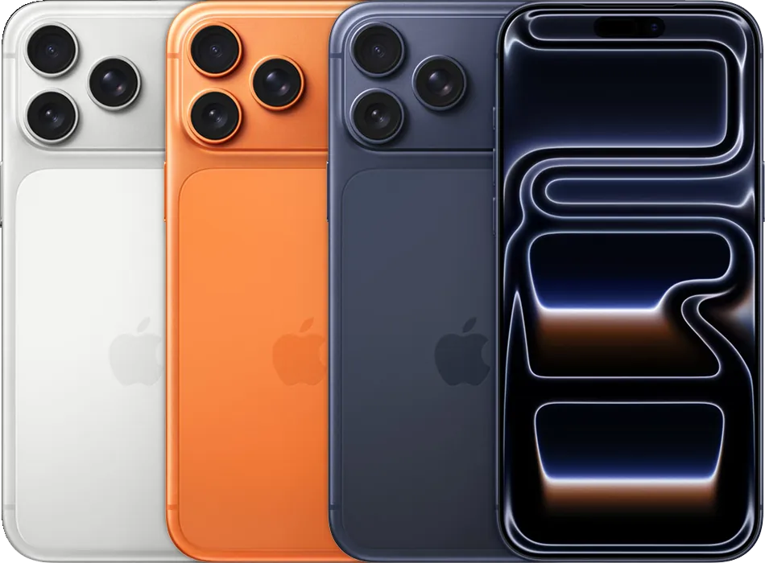
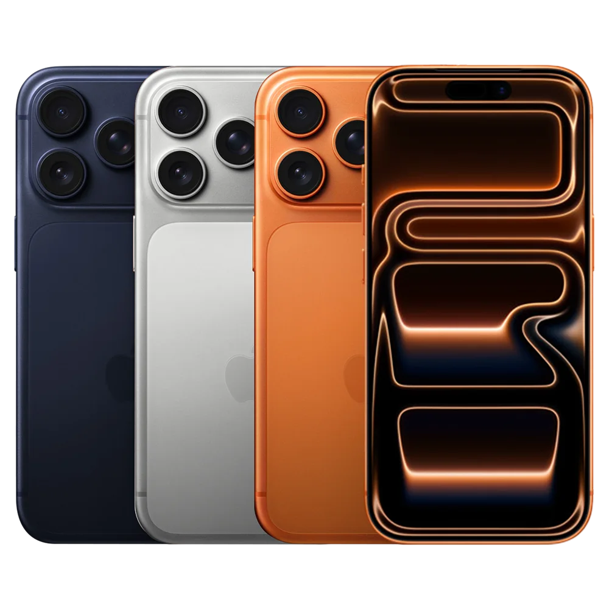
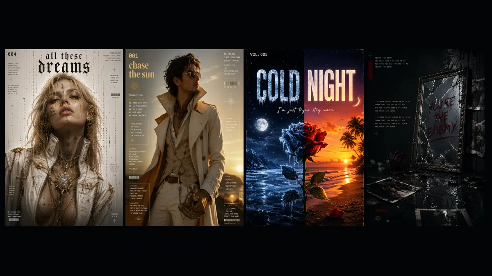
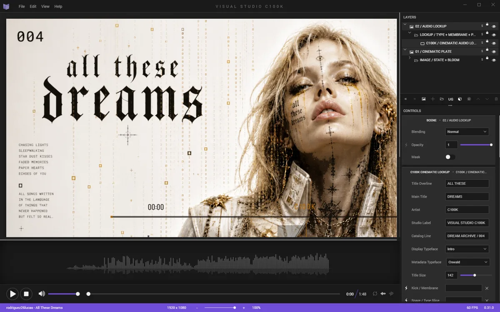

Código que resuelve problemas reales.
Córdoba, Argentina
31.4135° S, 64.1811° W
Construyo
productos,
produzco
música.
Programador, ingeniero de producto y productor musical. Este archivo reúne sistemas, sonidos y todo lo que estoy construyendo.
Desarrollo Producto Sistemas escalables centrados en personas.
Música Sonido que conecta y transforma.
Enfocado
Construyendo el futuro, hoy.
Modo TV
← ↑ ↓ → Navegar
OK Reproducir
⏯ Pausa
Volver Atrás
Archivo sonoro / 01
Mi música
Cada canción es un universo.
Produzco, compongo y doy vida a historias sonoras que conectan emoción, tecnología y narrativa.
Portfolio técnico / Estado al 05.08.2026
Sistemas que llegan
a producción.
No construimos pantallas aisladas. Diseñamos productos conectados con operaciones reales: catálogo, stock, ventas, audio, contenido, APIs e infraestructura.
- Lenguajes
- HTML · CSS · JavaScript · TypeScript · SQL
- Frameworks
- Next.js · React · React Native · Electron · Fastify
- Infraestructura
- Vercel · GitHub Pages · Cloudflare R2 · PostgreSQL
- Superficies
- Web · Móvil · Escritorio · Smart TV · Audio · Video
01 / Descubrimiento02 / Arquitectura03 / Implementación04 / Validación05 / Evolución
Producción

Comercio digital · Producto full-stack
iPhone Store
Río Ceballos
Una aplicación comercial conectada con inventario, promociones, galería y servicio técnico administrados desde Google Sheets. El catálogo reúne Apple y Xiaomi, simplifica la elección y convierte cada consulta en una conversación de venta con contexto.
Catálogo vivo
Búsqueda, filtros, variantes y promociones consumen datos normalizados con revalidación cada 60 segundos.
Decisión técnica
Fichas detalladas, recomendación guiada y comparación de hasta tres equipos reducen incertidumbre antes de comprar.
Servicio y conversión
Precios de reparaciones, disponibilidad y consultas estructuradas desembocan en atención por WhatsApp.
- Frontend
- Next.js 16 · React 19 · TypeScript
- Datos
- Google Apps Script · Sheets · Caché por etiquetas
- Comercio
- Comparador · Servicio técnico · WhatsApp
Producción

Venta mayorista · Lógica comercial
iPhone Store
Mayorista
Un configurador B2B que transforma una lista compleja de variantes en un pedido preciso: modelo, color, cantidad, disponibilidad, total y condición de pago quedan resueltos antes de abrir WhatsApp.
Inventario
Stock por modelo y color, con límites de cantidad ligados a cada combinación disponible.
Cálculo
Actualización inmediata del total y aplicación verificable del descuento para pagos en USDT.
Pedido
Composición automática de un mensaje comercial completo, legible y listo para confirmar.
- Base
- HTML semántico · CSS responsive
- Lógica
- JavaScript · Estado · Cálculo de precios
- Canal
- Vercel · Deep links de WhatsApp
Web + Smart TV

Producto musical · Web y Samsung Tizen
MiEspacio
Música
Una biblioteca de 20 lanzamientos con reproducción persistente, procesamiento de audio en tiempo real y una interfaz de diez pies para Samsung TV. El mismo producto coordina catálogo, streaming remoto, ecualización y control a distancia.
Reproductor
Estado sincronizado entre pista activa, controles, progreso, volumen y navegación del sitio.
Control remoto
Foco direccional, OK, teclas multimedia, Volver, puntero y rueda adaptados a TizenBrowser.
Audio y rendimiento
Web Audio API, R2 con CORS y rangos, portadas WebP responsivas y carga progresiva.
- Cliente
- HTML · CSS · JavaScript
- Audio
- Web Audio API · Cloudflare R2 · CORS + Range
- Superficies
- Web responsive · Samsung Tizen · GitHub Pages
Laboratorio / Estado al 05.08.2026
Lo complejo
ya está en marcha.
Productos de largo alcance construidos por capas: primero el dominio, después la arquitectura y, sobre fundamentos verificables, la experiencia final.
- Método
- Iteraciones pequeñas · Decisiones documentadas
- Calidad
- Pruebas de dominio · Validación visual · Perfiles de rendimiento
- Arquitectura
- Monorepos · Paquetes compartidos · Pipelines deterministas
- Estado
- Avance real · Riesgos visibles · Próximo hito explícito
Fase 1
Plataforma deportiva · Monorepo
KICK57
Una plataforma deportiva en fase fundacional. El monorepo comparte reglas de identidad, precios y bloqueo de canchas F5/F7 entre una API y tres clientes; reservas transaccionales, pagos y comunidad siguen en desarrollo.
Arquitectura del producto
Una operación.
Cuatro superficies.
La web administrativa, la web de jugadores y la aplicación móvil están diseñadas alrededor de una API central. El dominio vive en paquetes compartidos y Prisma define el esquema inicial de persistencia.
- ClientesNext.js Admin
Next.js Player
React Native + Expo - ServiciosFastify API
Dominio compartido - DatosPostgreSQL
Prisma ORM
Reglas antes que pantallas
Ocupación F5 y F7, precios, cancelaciones e invariantes expresadas como código comprobable.
Acceso consistente
Normalización de teléfono y correo, roles, etiquetas y cambio obligatorio de contraseña.
Esquema trazable
Prisma modela usuarios, partidos, canchas ocupadas, participantes y pagos; la conexión operativa aún está pendiente.
Autenticación real
Hash y persistencia de credenciales, endpoints de acceso, recuperación y primeras pantallas funcionales.
Estado verificado
Fundaciones firmes.
Alcance transparente.
Las reglas de dominio, el esquema inicial y los prototipos están escritos. La API expone salud; persistencia, autenticación y pantallas conectadas son los próximos hitos.
- 01Arquitectura y monorepo
- 02Dominio y pruebas
- 03Identidad base
- 04Autenticación y persistencia
- 05Reservas, pagos y comunidad
v0.44.0

Aplicación de escritorio · Motor audiovisual
VISUAL STUDIO
C100K
Un estudio canvas-first que convierte canción, imagen y dirección artística en escenas audiovisuales sincronizadas. Autopiloto, Copiloto y edición manual operan sobre el mismo documento, desde el análisis musical hasta el video final.
- 1920 × 1080
- Lienzo horizontal
- 60 FPS
- Simulación canónica
- 1.314
- Pruebas aprobadas
- .afx v5
- Documento portable
Pipeline determinista
Del pulso al fotograma.
- 01AudioDecodificación
- 02AudioTimelineFFT y eventos
- 03Visual ScoreEscenas y capas
- 04Canvas / WebGLComposición
- 05FFmpegVideo final
Dirección y precisión
El workspace reúne escenas, capas y rail creativo; conexiones superpuestas, Scene Sync Rigs y el modo Avanzado abren control fino.
Audio convertido en estructura
AudioTimeline y Visual Score transforman FFT, BPM, secciones, kick, snare y hi-hat en eventos deterministas.
Un solo documento
Autopiloto genera escenas; Copiloto varía Título v5, Espectro y Progreso con bloqueos persistentes y un único Undo.
Del preview al archivo
Captura exacta, salida horizontal o vertical de 1 a 60 FPS y codificación H.264 o WebM mediante FFmpeg.
Archivo / 04
Imágenes
Portadas, sesiones, procesos y fragmentos visuales del archivo.
Archivo / 05
Videos
Visualizers, videoclips y registros en movimiento.